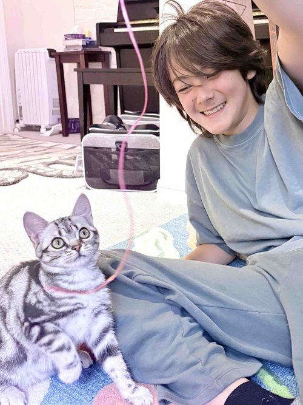
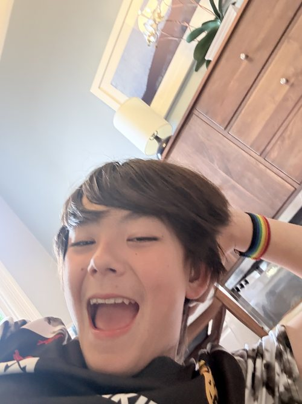
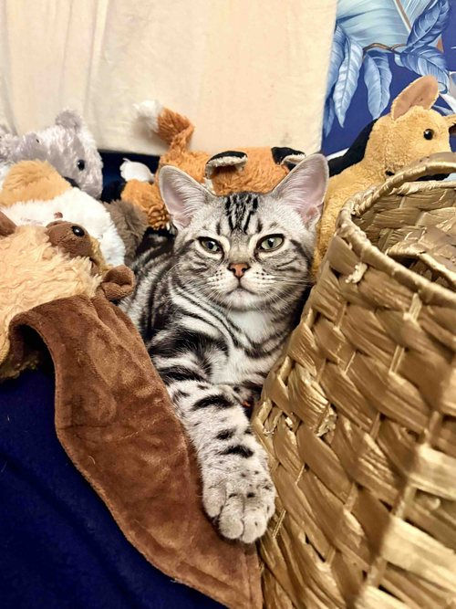
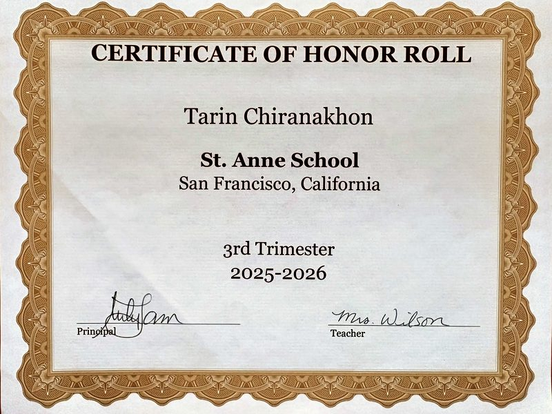
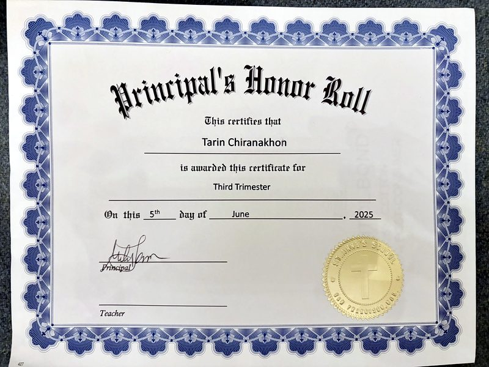
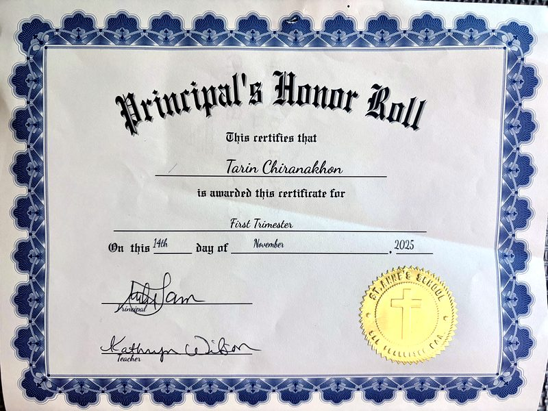
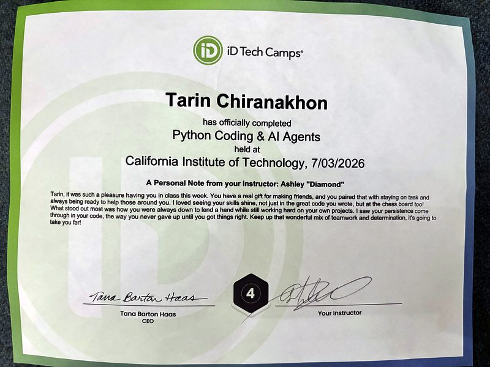

Hello!
Hi! My name is Tarin. I like rock climbing, math, and reading books. I have two American Shorthair cats named Matcha and Yuki, and they are SO CUTE!!



I study hard because I want to get a good job later in life, so I don't have to be very stressed all the time.




During my free time, I play basketball, soccer, and volleyball. My favorite sport is rock climbing because I enjoy solving difficult routes and challenging myself.
I have studied three languages—Mandarin, Cantonese, and Spanish—and I like visiting Thailand to spend time with my family.
I hope to go to a high school with strong athletics and good mathematics courses.
Thanks for reading my reading portfolio!